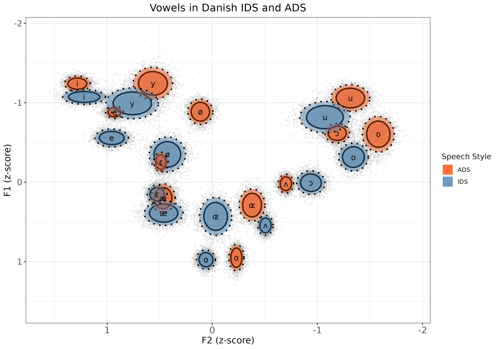

Chris Cox

Welcome to my website! I am a PhD researcher who investigates how infants discover, explore, and learn the speech sounds of their first language. I use techniques from acoustic phonetics, Bayesian statistics, meta-science, and big-team science. I'm based at Aarhus University and University of York (with Riccardo Fusaroli is my main supervisor). If you are interested in having a chat, I'd love to hear from you!
About Me
I was born in England and moved to Denmark with my family when I was seven. I grew up with two languages: my Danish mother talked to me in Danish, and my English father spoke to me in English. My brother and I answered both of them in English - and that's still how we do things today. I grew up a little north of Copenhagen and moved back to England for my bachelor's and master's degrees. I am now writing up my PhD thesis to be able to hand it in in December 2023.
Research Projects
My research projects generally looks at the active role of the infant and caregiver-infant feedback loops in language development. The projects I've done so far can roughly be divided into three main domains:
-
Infant-Directed Speech (IDS)
Caregivers instinctively modify their speech when interacting with infants. In general, caregivers use speak with a higher median pitch, in a slower tempo, and with acoustically exaggerated vowels. Why do caregivers do this? Does IDS sound the same across distinct languages? Do the properties of IDS change as the child grows older?
 -
Turn-Taking
Conversation is a dance, where each interactant has to adapt to the other. Infants are remarkable good at this, but how does it develop over time? Are some infants better than others? Should we consider turn-taking as an interactional structure for language? What about in non-human animal species? Do the temporal structures there look similar to those in humans? Here is a link to a talk I gave at the Interacting Minds Centre in Aarhus: https://www.youtube.com/watch?v=3_L9KRwurRc
-
Infant Vocalizations
Infants are active participants in their own phonological development. How do their vocalisations change over time? Can we quantify the variability of their production patterns and observe the emergence of stability in certain speech sounds?
Other Projects
Here are some of my other research interests, ranging from a workshop on Bayesian priors to secondary analyses of meta-analyses and multi-lab replication studies:
-
Workshop on Bayesian Priors
Here is a link to our 2022 workshop on how to set up a Bayesian workflow. The workshop is aimed at Bayes-curious students and provides much discussion of how to define and assess priors:
-
Power Analysis for ManyBabies5
I'm happy to be involved in the analysis team for the ManyBabies5 project: https://psyarxiv.com/ck3vd/
-
Relations between Multilab Replications and Meta-Analyses
I'm also involved in a project of how MLRs and MAs relate to each other and their respective strengths and weaknesses. We have a project in preparation that is trying to combine and compare these two sources of evidence across key population and design characteristics of the underlying studies.
Publications
-
First-Author Papers
- Cox, C., Dideriksen, C., Keren-Portnoy, T., Roepstorff, A., Christiansen, M. H., & Fusaroli, R. (2023). Infant-directed speech does not always involve exaggerated vowel distinctions: Evidence from Danish. Child Development, 00, 1–25 Link: DOI
- Cox, C., Bergmann, C., Fowler, E., Keren-Portnoy, T., Roepstorff, A., Bryant, G., & Fusaroli, R. (2023). A systematic review and Bayesian meta-analysis of the acoustic features of infant-directed speech. Nature Human Behaviour, 7(1), 114–133. Link: DOI
- Nguyen, V., Versyp, O., Cox, C., & Fusaroli, R. (2022). A systematic review and Bayesian meta-analysis of the development of turn-taking in adult-child vocal interactions. Child Development, 93(4), 1181-1200. Link: DOI
- Cox, C. M. M., Keren-Portnoy, T., Roepstorff, A., & Fusaroli, R. (2022). A Bayesian meta-analysis of infants' ability to perceive audio-visual congruence for speech. Infancy, 27(1), 67-96. Link: DOI
Contact Me
You can reach me at chris.mm.cox[at]gmail.com.